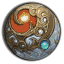
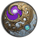
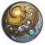

The export → optimize → import loop, in plain English.
In-game pluginWeb appSame product, two halves
What this plugin does
Tonberry Tactics reads your equipped gear, derives your stats and breakpoint hints in the Character window, and exports your gearset to a copy-pasteable string. The companion website consumes that string, runs an optimizer in your browser, and produces a plan string going the other direction — pasted back into the game as an actionable meld checklist. Two halves, one product, round-trip in roughly thirty seconds.
The Loop
01 · Export
Export
/ttexport
Copies your gear to clipboard as GG-EXPORT:v1:<base64> — every piece, every materia, every stat. A save file you can paste into a website.
02 · Optimize
Optimize
tonberrytactics.pages.dev
Paste the export into the import box. The site runs an optimizer against your gear and emits a GG-PLAN:v1 string with recommended melds.
03 · Import
Import
/ttimport
Reads the plan from your clipboard and turns it into an active checklist — “Diamond Earring slot 1 ← Savage Aim XII.” Tick boxes as you meld.
“We carry the lantern. We carry the knife. We step forward, one slot at a time, until the math is done. Stab first. Stab true.”
— THE LAST FLAME · TLF MANIFESTO
Slash Commands
/tt
Open this window.
/ttexport
Export equipped gear to clipboard as GG-EXPORT:v1:…
/ttimport
Import a plan from clipboard. Pair with /ttexport + the website.
/ttinfo
Print diagnostic state to chat. Use this when reporting bugs.
When something looks wrong
Open the Diagnostics tab. Confirm “Materia Advisor injected: Yes.”
Run /ttinfo in-game and copy the chat block.
File an issue at github.com/LastOnionKnight/GearGoblin.
Tips
Plan tab — paste an Etro or XIVGear URL and diff it against equipped gear.
Materia tab — current melds with overcap and tier audits.
Settings — toggle every derivation row; greyed when CPR provides them.
Character · Substat Profile
Derived from equipped gear at i735. Cap marks show the next relevant breakpoint — fill past it is wasted budget.
Critical Hit3022 / 3174 cap95% · next tier +152
Priority stat. +0.4% crit rate to reach the i735 tier — one Savage Critical Hit XII gets you there.
Determination2156 / no caplinear · 71%
No breakpoints — pure linear gain. Safe dump stat once speed and crit are tiered.
Skill Speed964 / 904 tier+60 over · 2.43 GCD
60 points past the 2.43s tier — they do nothing until the next GCD breakpoint. Reclaim into Det or DH.
Direct Hit1844 / 2030 cap91% · room for 2
Two more Savage Direct Hit XII fit before the budget ceiling. +1.0% DH rate.
Average Item Level
735 · 13 / 13 slots filled · Materia Advisor injected below by Tonberry Tactics. Substat derivations provided by CharacterPanelRefined.
Plan · Diff Against Target
Paste an Etro or XIVGear URL to diff a target set against your equipped gear, slot by slot.
Target source
etro.gg/gearset/a1c9-…-savage-bisPARSED ✓11 slots match · 2 differ
Slot Diff
Earrings
Diamond Earring of Aimingequipped · DET / DH
target wants CRT / DET → remeld
Ring · R
Diamond Ring of Aimingequipped · CRT / DET
target i740 → upgrade
Weapon
Diamond Composite Bowequipped · matches target
identical
Materia · Current Melds
Every melded substat with overcap and tier audits. Red rows are wasting budget.

Weapon · 1
Savage Critical Hit Materia XII+36 Critical Hit
clean · under cap

Head · 1
Savage Skill Speed Materia XII+36 Skill Speed
+24 overcap · 2.43 tier hit
Hands · 2
Savage Direct Hit Materia XII+36 Direct Hit
clean · under cap
Earring · 1
Heavens' Eye Materia XII+12 Determination
swap → Savage Crit XII (+24)

Ring · 2
Savage Tenacity Materia XII+36 Tenacity
offensive job · 0 value
Settings · Derivation Rows
Toggle each row Tonberry Tactics injects into the Character window. Locked rows are supplied by CharacterPanelRefined.
Materia Advisor
Up to three meld recommendations under Average Item Level.
Breakpoint hints
GCD and crit-tier callouts inline with derived stats.
Substat derivations
Crit %, DH %, GCD, DoT scalar — provided by CPR.
Auto-export on logout
Copy GG-EXPORT string to clipboard when you log out.
Verbose chat logging
Print parse + inject steps to chat. Leave off unless debugging.
Diagnostics · /ttinfo
Copy this block into a GitHub issue. “Force Reinject” re-runs the advisor without closing the Character window.
Plugin Tonberry Tactics v1.2.1Dalamud API11.0.0.17 · game 7.21
Character windowopenMateria Advisor injected: Yes · 3 recommendations
CPR detectedYes · derivations delegated
Gear read 13 / 13 slots · i735 · DRK
Last export GG-EXPORT:v1 · 482 bytes · 2s ago
Last plannone this session
Feedback · The Last Flame
Found a bug, a wrong breakpoint, or a meld the advisor missed? Bring it to us. Attach your /ttinfo block so we can reproduce.
A two-part FFXIV gear optimizer by The Last Flame. The in-game plugin reads your gear and injects a Materia Advisor into the Character window; the companion website runs the optimizer and hands back a meld plan. Round-trip in thirty seconds, no backend, no account.
 Hands · 2
Hands · 2
 Earring · 1
Earring · 1